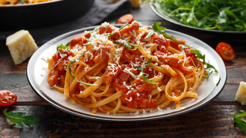

Macarronada Italiana
Receita e Modo de Preparo

A macarronada italiana é um prato clássico e muito apreciado em todo o mundo, especialmente em almoços de família e ocasiões especiais.
Com seu molho de tomate rico e temperado e a massa perfeitamente cozida, essa receita conquista o paladar de todos!
Veja com a gente como preparar uma deliciosa macarronada italiana, uma receita tradicional, cheia de sabor, fácil de fazer e perfeita para reunir a família em volta da mesa!
Informações:
Tempo de Preparo: 30min | Dificuldade: Fácil | Custo: Baixo
Utensílios: Panela, Colher de Pau, Escorredor, Prato de Massa
Ingredientes (4 Porções):
Macarrão:
- 500g de macarrão tipo espaguete
- Água e sal para cozinhar
Molho:
- 2 colheres (sopa) de azeite de oliva
- 1 cebola picada
- 2 dentes de alho picados
- 5 tomates maduros picados (ou 1 lata de molho pronto)
- Sal, pimenta e manjericão a gosto
Modo de Preparo:
- Cozinhe o macarrão conforme as instruções da embalagem.
- Refogue a cebola e o alho no azeite até dourar.
- Adicione os tomates, tempere e deixe o molho apurar por cerca de 10 minutos.
- Escorra o macarrão, misture com o molho e finalize com manjericão.